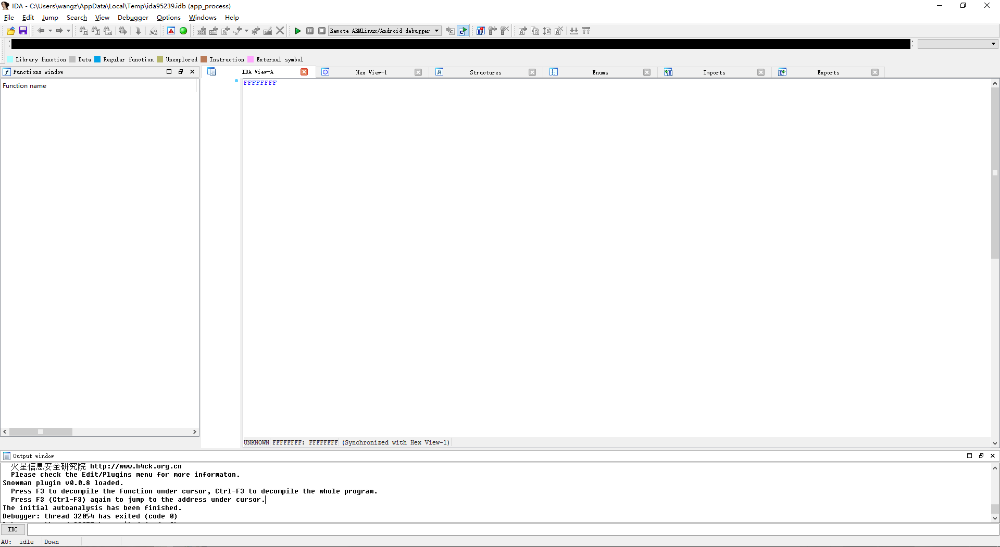
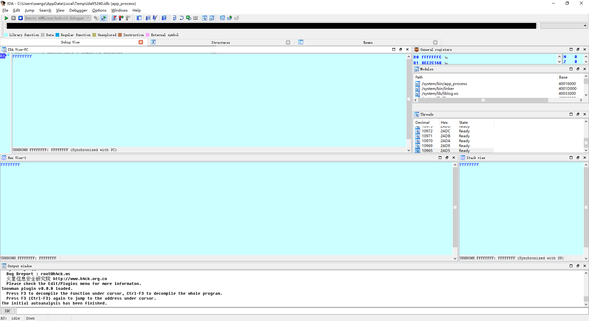
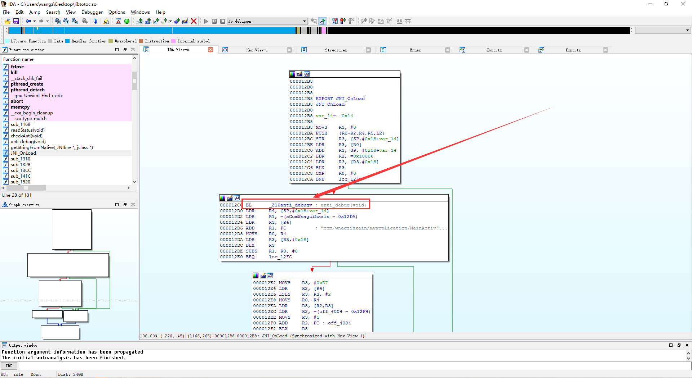
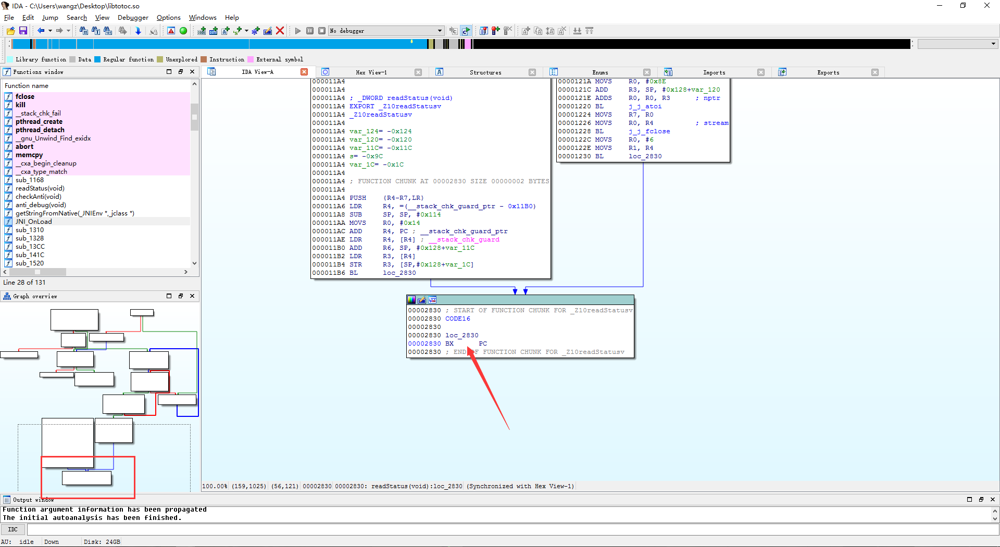
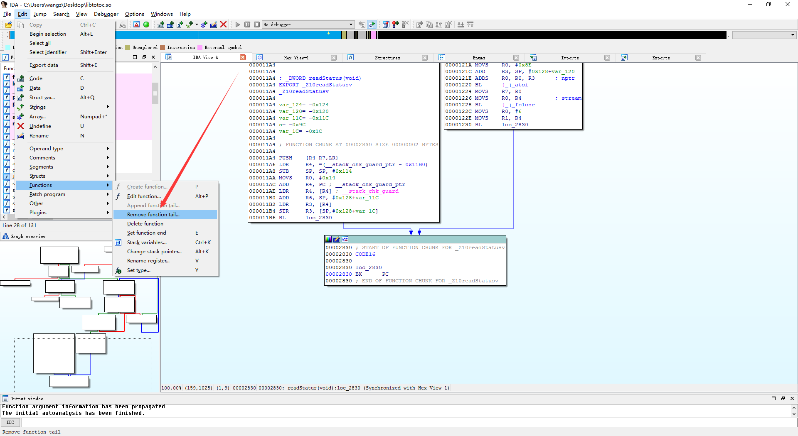
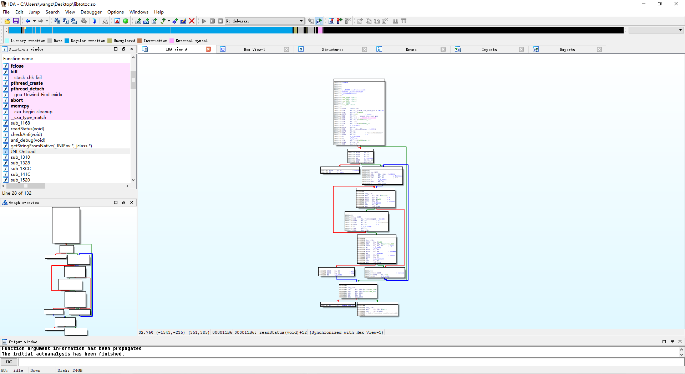

Author：wnagzihxain
Mail：tudouboom@163.com
经常会在一些脱壳文章里面看到TracerPid，ptrace什么的，那这些都是什么意思呢？
我们来查看本程序的/proc/{PID}/status文件
C:\Users\wangz>adb shell
root@jflte:/ # ps |grep "wnagzihxain"
u0_a123 29139 281 960944 31468 ffffffff 4005a8e0 S com.wnagzihxain.myapplication
root@jflte:/ # cat /proc/29139/status
Name: n.myapplication /*进程的程序名*/
State: S (sleeping)
Tgid: 29139 /*线程组号*/
Pid: 29139 /*进程pid process id*/
PPid: 281 /*父进程的pid parent processid*/
TracerPid: 0 /*跟踪进程的pid*/
Uid: 10123 10123 10123 10123 /*uid euid suid fsuid*/
Gid: 10123 10123 10123 10123 /*gid egid sgid fsgid*/
FDSize: 256 /*文件描述符的最大个数，file->fds*/
Groups: 50123 /*启动该进程的用户所属的组的id*/
VmPeak: 960944 kB /*进程地址空间的大小*/
VmSize: 923620 kB /*进程虚拟地址空间的大小reserved_vm：进程在预留或特殊的内存间的物理页*/
VmLck: 0 kB /*进程已经锁住的物理内存的大小.锁住的物理内存不能交换到硬盘*/
VmPin: 0 kB
VmHWM: 31468 kB /*文件内存映射和匿名内存映射的大小*/
VmRSS: 31468 kB /*应用程序正在使用的物理内存的大小，就是用ps命令的参数rss的值 (rss)*/
VmData: 18428 kB /*程序数据段的大小（所占虚拟内存的大小），存放初始化了的数据*/
VmStk: 136 kB /*进程在用户态的栈的大小*/
VmExe: 20 kB /*程序所拥有的可执行虚拟内存的大小,代码段,不包括任务使用的库 */
VmLib: 61212 kB /*被映像到任务的虚拟内存空间的库的大小*/
VmPTE: 192 kB /*该进程的所有页表的大小*/
VmSwap: 13144 kB
Threads: 12 /*共享使用该信号描述符的任务的个数*/
SigQ: 0/14462 /*待处理信号的个数/目前最大可以处理的信号的个数*/
SigPnd: 0000000000000000 /*屏蔽位，存储了该线程的待处理信号*/
ShdPnd: 0000000000000000 /*屏蔽位，存储了该线程组的待处理信号*/
SigBlk: 0000000000001204 /*存放被阻塞的信号*/
SigIgn: 0000000000000000 /*存放被忽略的信号*/
SigCgt: 00000002000094f8 /*存放被俘获到的信号*/
CapInh: 0000000000000000 /*能被当前进程执行的程序的继承的能力*/
CapPrm: 0000000000000000 /*进程能够使用的能力，可以包含CapEff中没有的能力，这些能力是被进程自己临时放弃的*/
CapEff: 0000000000000000 /*是CapPrm的一个子集，进程放弃没有必要的能力有利于提高安全性*/
CapBnd: fffffff000000000
Cpus_allowed: f /*可以执行该进程的CPU掩码集*/
Cpus_allowed_list: 0-3
voluntary_ctxt_switches: 258 /*进程主动切换的次数*/
nonvoluntary_ctxt_switches: 201 /*进程被动切换的次数*/
由于其余字段对我们的CrackMe分析来说并不是很重要，有兴趣扩展的同学可以看这篇文章
Linux内核之旅：proc文件系统探索之以数字命名的目录[四]
那么我们来使用IDA attach我写好的一个Helloworld Demo
先设置ro.debuggable为1
root@jflte:/data # ./mprop ro.debuggable 1
运行android_server
C:\Users\wangz>adb shell
root@jflte:/ # cd data/local
root@jflte:/data/local # ./as
IDA Android 32-bit remote debug server(ST) v1.19. Hex-Rays (c) 2004-2015
Listening on port #23946...
转发23946端口
C:\Users\wangz>adb forward tcp:23946 tcp:23946
开DDMS或者Android Device Monitor
选中我们要调试的程序，一定要点击选中
使用IDA attach
观察TracerPid字段，发现变成了8319，State字段也变成了tracing stop
root@jflte:/ # cat /proc/29139/status
Name: n.myapplication
State: t (tracing stop)
Tgid: 29139
Pid: 29139
PPid: 281
TracerPid: 8319
Uid: 10123 10123 10123 10123
Gid: 10123 10123 10123 10123
FDSize: 256
Groups: 50123
VmPeak: 961076 kB
VmSize: 923620 kB
VmLck: 0 kB
VmPin: 0 kB
VmHWM: 32216 kB
VmRSS: 32216 kB
VmData: 18428 kB
VmStk: 136 kB
VmExe: 20 kB
VmLib: 61212 kB
VmPTE: 192 kB
VmSwap: 13132 kB
Threads: 12
SigQ: 0/14462
SigPnd: 0000000000000000
ShdPnd: 0000000000000000
SigBlk: 0000000000001204
SigIgn: 0000000000000000
SigCgt: 00000002000094f8
CapInh: 0000000000000000
CapPrm: 0000000000000000
CapEff: 0000000000000000
CapBnd: fffffff000000000
Cpus_allowed: f
Cpus_allowed_list: 0-3
voluntary_ctxt_switches: 577
nonvoluntary_ctxt_switches: 315
那么8319是什么？
使用ps命令查看
root@jflte:/ # ps |grep 8319
root 8319 8277 12700 10968 ffffffff b6f324c4 S ./android_server
原来是我们的android_server程序，那么看到这里，大家应该有一些理解了，当我们使用IDA attach程序的时候，在/proc/{PID}/status文件的TracerPid字段会写入调试程序的PID
也就是说使用TracerPid反调试的原理就是检测这个字段是否为0，为0说明没有被调试，不为0说明正在被调试，检测调试器直接退出就可以达到反调试的效果
接下来我们来实现具体的代码
创建一个AntiDebug文件夹，创建一个antidebug.cpp，一个antidebug.h
头文件可以在创建C++ Source File的时候选中Create an associated header自动创建
先在antidebug.h里引入各种头文件
//
// Created by wnagzihxain on 2016/12/25 0025.
//
#ifndef MYAPPLICATION_ANTIDEBUG_H
#define MYAPPLICATION_ANTIDEBUG_H
#include <stdio.h>
#include <sys/ptrace.h>
#include <stdlib.h>
#include <unistd.h>
#include <sys/types.h>
#include <android/log.h>
#include <sys/syscall.h>
#include <sys/inotify.h>
#include <pthread.h>
#include <sys/prctl.h>
#include <sys/wait.h>
#include <signal.h>
#include <errno.h>
#include <sys/queue.h>
#include <sys/select.h>
#endif //MYAPPLICATION_ANTIDEBUG_H
在antidebug.cpp实现一下反调试函数
//
// Created by wnagzihxain on 2016/12/25 0025.
//
#include "antidebug.h"
#define NULL 0
#define CHECK_TIME 10
#define LOGI(...) __android_log_print(ANDROID_LOG_INFO, "totoc", __VA_ARGS__)
#define LOGE(...) __android_log_print(ANDROID_LOG_ERROR, "totoc", __VA_ARGS__)
pthread_t id_anti_debug = NULL;
void readStatus() {
FILE *fd;
char filename[128];
char line[128];
pid_t pid = syscall(__NR_getpid);
LOGI("PID : %d", pid);
sprintf(filename, "/proc/%d/status", pid);// 读取proc/pid/status中的TracerPid
while (1) {
fd = fopen(filename, "r");
while (fgets(line, 128, fd)) {
if (strncmp(line, "TracerPid", 9) == 0) {
int status = atoi(&line[10]);
LOGI("########## status = %d, %s", status, line);
fclose(fd);
syscall(__NR_close, fd);
if (status != 0) {
LOGI("########## FBI WARNING ##########");
LOGI("######### FIND DEBUGGER #########");
kill(pid, SIGKILL);
return;
}
break;
}
}
sleep(CHECK_TIME);
}
}
void checkAnti() {
LOGI("Call readStatus...");
readStatus();
}
void anti_debug() {
LOGI("Call anti_debug...");
if (pthread_create(&id_anti_debug, NULL, (void *(*)(void *)) &checkAnti, NULL) != 0) {
LOGE("Failed to create a debug checking thread!");
exit(-1);
};
pthread_detach(id_anti_debug);
}
然后写一个JNI_OnLoad调用动态注册一个函数是为了后续的测试，可以不需要注册函数相关
//
// Created by wnagzihxain on 2016/12/17 0017.
//
#include <iostream>
#include "android/log.h"
#include "AntiDebug/antidebug.h"
#include "totoc.h"
using namespace std;
#define LOGI(...) __android_log_print(ANDROID_LOG_INFO, "totoc", __VA_ARGS__)
#define LOGE(...) __android_log_print(ANDROID_LOG_ERROR, "totoc", __VA_ARGS__)
static const char *gClassName = "com/wnagzihxain/myapplication/MainActivity";
/*
* Class: com_wnagzihxain_myapplication_MainActivity
* Method: getStringFromNative
* Signature: ()Ljava/lang/String;
*/
JNIEXPORT jstring JNICALL getStringFromNative(JNIEnv *env, jclass obj) {
//LOGI("getString : Hello From JNI");
return env->NewStringUTF("Hello From JNI!");
}
static JNINativeMethod gMethods[] = {
{"getStringFromNative", "()Ljava/lang/String;", (void *) getStringFromNative},
};
static int registerNativeMethods(JNIEnv *env, const char *className, JNINativeMethod *gMethods, int numMethods) {
jclass clazz;
clazz = env->FindClass(className);
if (clazz == NULL) {
//LOGE("env->FindClass error");
return JNI_FALSE;
}
if (env->RegisterNatives(clazz, gMethods, numMethods) < 0) {
//LOGE("env->RegisterNatives error");
return JNI_FALSE;
}
return JNI_TRUE;
}
JNIEXPORT jint JNICALL JNI_OnLoad(JavaVM *vm, void *reserved) {
JNIEnv *env = NULL;
jint result = -1;
if (vm->GetEnv((void **) &env, JNI_VERSION_1_6) != JNI_OK) {
//LOGE("vm->GetEnv error");
return result;
}
anti_debug();
if (registerNativeMethods(env, gClassName, gMethods, sizeof(gMethods) / sizeof(gMethods[0])) == JNI_FALSE) {
return -1;
}
return JNI_VERSION_1_6;
}
首先是anti_debug()函数，用于创建线程执行chackAnti()函数
chackAnti()函数里面调用readStatus()，readStatus()是真正实现读取TracerPid字段实现反调试的函数，那么这里为什么要多写一个函数用于调用呢？
这里是因为：程序不仅仅可以通过检测/proc/{PID}/status文件的TracerPid字段是否为0来判断是否被调试，还有其它方法，比如检测23946端口，这个端口是android_server在占用，还可以各种方法，每一个方法要是都写在一个readStatus()里那就太混乱了，所以我们可以将每个反调试方法实现在各自单独的函数里，然后在checkAnti()里面集中调用
那么仔细读一下anti_debug()函数，是比较容易理解的，在子线程中循环检测，时间间隔是10秒，发现TracerPid字段的值不为0就发送一个SIGKILL信号，这个信号简单粗暴，其它信号进程都可以忽略掉，唯独这个信号不行，无条件终止指定进程，意思就是说：你个不要脸的都要调试我了，我就自杀！！！！！！
我们attach一下看看效果
12-26 17:05:15.539 32038-32038/com.wnagzihxain.myapplication I/totoc: Call anti_debug...
12-26 17:05:15.549 32038-32054/com.wnagzihxain.myapplication I/totoc: Call readStatus...
12-26 17:05:15.549 32038-32054/com.wnagzihxain.myapplication I/totoc: PID : 32038
12-26 17:05:15.549 32038-32054/com.wnagzihxain.myapplication I/totoc: ########## status = 0, TracerPid: 0
12-26 17:05:25.548 32038-32054/com.wnagzihxain.myapplication I/totoc: ########## status = 0, TracerPid: 0
12-26 17:05:35.548 32038-32054/com.wnagzihxain.myapplication I/totoc: ########## status = 0, TracerPid: 0
12-26 17:05:45.548 32038-32054/com.wnagzihxain.myapplication I/totoc: ########## status = 0, TracerPid: 0
12-26 17:05:55.548 32038-32054/com.wnagzihxain.myapplication I/totoc: ########## status = 0, TracerPid: 0
12-26 17:06:05.547 32038-32054/com.wnagzihxain.myapplication I/totoc: ########## status = 0, TracerPid: 0
12-26 17:06:15.547 32038-32054/com.wnagzihxain.myapplication I/totoc: ########## status = 0, TracerPid: 0
从LogCat中可以看出来，确实是在不断地检测
我们来使用IDA attach
attch成功后会断在这里
点击左上角的三角运行起来
可以看到程序退出，并且Android Device Monitor显示程序的状态是DEAD，LogCat里输出检测到调试器的信息
12-26 17:08:24.383 32038-32054/com.wnagzihxain.myapplication I/totoc: ########## status = 4036, TracerPid: 4036
12-26 17:08:24.383 32038-32054/com.wnagzihxain.myapplication I/totoc: ########## FBI WARNING ##########
12-26 17:08:24.383 32038-32054/com.wnagzihxain.myapplication I/totoc: ######### FIND DEBUGGER #########
IDA也是一个不太好的状态，这个界面可以多留意一下，以后经常会遇到的

基本效果虽然是达到了，但是我们发现，在IDA attach上程序之后，会断下来，并不会立刻断开，当我们运行起来之后，才会断开，所以我们可以改进一下，fork一个子进程出来，当父进程被attach之后，由子进程来检测父进程的/proc/{PID}/status文件，就可以实现IDA attach程序的时候立刻kill掉自己
改一下代码
void readStatus() {
FILE *fd;
char filename[128];
char line[128];
pid_t pid = syscall(__NR_getpid);
LOGI("PID : %d", pid);
sprintf(filename, "/proc/%d/status", pid);// 读取proc/pid/status中的TracerPid
if (fork() == 0) {
while (1) {
fd = fopen(filename, "r");
while (fgets(line, 128, fd)) {
if (strncmp(line, "TracerPid", 9) == 0) {
int status = atoi(&line[10]);
LOGI("########## status = %d, %s", status, line);
fclose(fd);
syscall(__NR_close, fd);
if (status != 0) {
LOGI("########## FBI WARNING ##########");
LOGI("######### FIND DEBUGGER #########");
kill(pid, SIGKILL);
return;
}
break;
}
}
sleep(CHECK_TIME);
}
} else {
LOGE("fork error");
}
}
fork()函数的作用是生成和父进程一模一样的子进程，它会和父进程一起执行一样的代码
当执行fork()函数的时候，会有三种返回值，一个是大于0的数，这个是返回给父进程的，这个数表示子进程的PID，一个是等于0，这个是返回给子进程的，那么在正常情况下是这样的，在不正常的情况下返回-1，表示fork()函数调用失败
既然正常情况下有两个返回值，那么我们就可以使用这两个不同的返回值来进行区分当前是父进程在执行还是子进程在执行
这里要注意一下源码的实现，我们使用的是返回值为0的情况，也就是说只实现了子进程，执行的时候，检测的是父进程的/proc/{PID}/status文件
运行起来，使用ps命令，可以看到有两个进程，10965是父进程
root@jflte:/ # ps |grep "wnagzihxain"
u0_a124 10965 281 952676 31684 ffffffff 4005a8e0 S com.wnagzihxain.myapplication
u0_a124 10992 10965 909256 11836 c00a30b4 4005a028 S com.wnagzihxain.myapplication
LogCat的输出发现了fork error，这里并不是真正的fork失败，而是这是父进程，fork后返回值为子进程的PID，而我们LogCat输出端是父进程的日志，所以看到的是fork error，在子进程里，确实是在不断的检测父进程的/proc/{PID}/status文件
12-26 17:47:56.037 10965-10965/com.wnagzihxain.myapplication I/totoc: Call anti_debug...
12-26 17:47:56.037 10965-10990/com.wnagzihxain.myapplication I/totoc: Call readStatus...
12-26 17:47:56.037 10965-10990/com.wnagzihxain.myapplication I/totoc: PID : 10965
12-26 17:47:56.047 10965-10990/com.wnagzihxain.myapplication E/totoc: fork error
12-26 17:47:56.097 10965-10965/com.wnagzihxain.myapplication I/totoc: getString : Hello From JNI
使用IDA attach父进程，选择PID为10965那个，根据LogCat的输出确定父进程
卡了一下，IDA挂了

再使用ps命令，发现两个进程都挂了
root@jflte:/ # ps |grep "wnagzihxain"
1|root@jflte:/ #
那这个效果是不错的
我们现在来attch子进程
依旧是先ps命令查看进程情况，21330是父进程，21353是子进程，千万记得，是通过LogCat判断哪个是父进程！！！！！！
root@jflte:/ # ps |grep "wnagzihxain"
u0_a124 21330 281 944556 31536 ffffffff 4005a8e0 S com.wnagzihxain.myapplication
u0_a124 21353 21330 909256 12008 c00a30b4 4005a028 S com.wnagzihxain.myapplication
我们attach子进程

发生了什么，竟然没有挂掉？？？？？？
是我们的代码出现错误了吗？？？？？？
从调试情况来看，是的，逻辑写的不太好
带着疑问，我们尝试运行起来，也没有挂掉
那么看来是代码考虑的情况不完全了
我们再来仔细的思考一下代码是不是哪里有问题
void readStatus() {
FILE *fd;
char filename[128];
char line[128];
pid_t pid = syscall(__NR_getpid);
LOGI("PID : %d", pid);
sprintf(filename, "/proc/%d/status", pid);// 读取/proc/pid/status中的TracerPid
if (fork() == 0) {
while (1) {
fd = fopen(filename, "r");
while (fgets(line, 128, fd)) {
if (strncmp(line, "TracerPid", 9) == 0) {
int status = atoi(&line[10]);
LOGI("########## status = %d, %s", status, line);
fclose(fd);
syscall(__NR_close, fd);
if (status != 0) {
LOGI("########## FBI WARNING ##########");
LOGI("######### FIND DEBUGGER #########");
kill(pid, SIGKILL);
return;
}
break;
}
}
sleep(CHECK_TIME);
}
} else {
LOGE("fork error");
}
}
蓦然间，我们发现代码里只针对父进程做了反调试保护，而子进程却没有任何保护
我们在子进程中读取的是父进程的/proc/{PID}/status文件，kill的也是父进程
fd = fopen(filename, "r");
......
kill(pid, SIGKILL);
难怪我们刚才没有FBI WARNING
搞清楚这些后，来修改一下代码
使用PTRACE_TRACEME
void readStatus() {
FILE *fd;
char filename[128];
char line[128];
pid_t pid = syscall(__NR_getpid);
LOGI("PID : %d", pid);
sprintf(filename, "/proc/%d/status", pid);//读取/proc/pid/status中的TracerPid
if (fork() == 0) {
int pt = ptrace(PTRACE_TRACEME, 0, 0, 0); //子进程反调试
if (pt == -1)
exit(0);
while (1) {
fd = fopen(filename, "r");
while (fgets(line, 128, fd)) {
if (strncmp(line, "TracerPid", 9) == 0) {
int status = atoi(&line[10]);
LOGI("########## status = %d, %s", status, line);
fclose(fd);
syscall(__NR_close, fd);
if (status != 0) {
LOGI("########## FBI WARNING ##########");
LOGI("######### FIND DEBUGGER #########");
kill(pid, SIGKILL);
return;
}
break;
}
}
sleep(CHECK_TIME);
}
} else {
LOGE("fork error");
}
}
我们在子进程中使用ptrace，将请求类型设为PTRACE_TRACEME，表示让父进程跟踪自己，而进程在同一时间，只能被一个调试器调试或者跟踪，所以这里就是一个父进程，一个子进程，子进程通过读取父进程的/proc/{PID}/status文件保护父进程不被调试，同时让父进程跟踪自己，保护自己不被调试，如果ptrace失败，说明有调试器已经在调试自己，直接退出
运行起来，来看一下是不是和我们预期的一样
root@jflte:/ # ps |grep "wnagzihxain"
u0_a124 22633 281 943504 31644 ffffffff 4005a8e0 S com.wnagzihxain.myapplication
u0_a124 22653 22633 909256 11872 c00a30b4 4005a028 S com.wnagzihxain.myapplication
root@jflte:/ # cat /proc/22633/status |grep "TracerPid"
TracerPid: 0
root@jflte:/ # cat /proc/22653/status |grep "TracerPid"
TracerPid: 22633
从结果来看，子进程确实是被父进程跟踪了
直观的效果我们使用IDA attach

使用IDA进行逆向分析，编译的时候记得把LogCat给注释掉
左边有几个我们很眼熟的函数

进入JNI_OnLoad()函数

跟进这个调用，也就是我们的反调试函数

分析一下代码
导出函数和函数名
.text:0000126C ; _DWORD anti_debug(void)
.text:0000126C EXPORT _Z10anti_debugv
.text:0000126C _Z10anti_debugv
将0赋值给R1：R1 = 0
.text:0000126C MOVS R1, #0 ; attr
将R4和LR寄存器的值压栈
.text:0000126E PUSH {R4,LR}
重定位操作：R4 = id_anti_debug_ptr - 0x127A，这个地方有个小技巧，IDA识别出来的字符串有时候是用指针来表示的，如果表示指针的变量后面还有一个_ptr，表示的是这是指针的指针，或者说指针的地址，比如*string = "Goodmorning"，string就表示它的指针或者首地址，那么string_str表示的就是指针的地址，也就是string = *string_str
.text:00001270 LDR R4, =(id_anti_debug_ptr - 0x127A)
重定位操作：R2 = _Z9checkAntiv_ptr - 0x127A，这个也是表示指针的指针
.text:00001272 LDR R2, =(_Z9checkAntiv_ptr - 0x127E)
将R1的值赋值给R3：R3 = R1
.text:00001274 MOVS R3, R1 ; arg
此时PC为0x127A：R4 = id_anti_debug_ptr
.text:00001276 ADD R4, PC ; id_anti_debug_ptr
取出R4地址上的值赋值给R4：R4 = [R4]，取出这个指针的地址上的值，这下R4真的存储的是id_anti_debug的地址或者说它的指针
.text:00001278 LDR R4, [R4] ; id_anti_debug
此时PC为0x127E：R2 = _Z9checkAntiv_ptr
.text:0000127A ADD R2, PC ; _Z9checkAntiv_ptr
取出R2地址上的值赋值给R2：R2 = [R2]，R2此时存储的是checkAnti(void)方法的指针
.text:0000127C LDR R2, [R2] ; checkAnti(void) ; start_routine
将R4的值赋值给R0：R0 = R4
.text:0000127E MOVS R0, R4 ; newthread
调用j_j_pthread_create()，此时R0为线程标识符的指针，R1为0，R2为checkAnti(void)函数指针，R3为0
.text:00001280 BL j_j_pthread_create
对比返回值是否为0
.text:00001284 CMP R0, #0
返回值为0表示线程创建成功，当线程结束跳转到正常结束分支
.text:00001286 BEQ loc_1290
正常结束分支
.text:00001290 loc_1290 ; th
.text:00001290 LDR R0, [R4]
.text:00001292 BL j_j_pthread_detach
.text:00001296 POP {R4,PC}
.text:00001296 ; End of function anti_debug(void)
当返回值不为0表示线程创建失败，则退出
.text:00001288 MOVS R0, #1
.text:0000128A NEGS R0, R0
.text:0000128C BL j_j_exit
进入创建线程运行的函数checkAnti(void)

调用readStatus(void)函数
00001266 BL _Z10readStatusv ; readStatus(void)
继续跟入

这里是一个非常常见的IDA识别错误，从整个逻辑调用来看，这个函数有多个入口，但是从我们的经验来说，函数入口应该有变量的或者参数，那么明显，左下角红色框框里面才是入口，我们来修正一下
这个修正我在Ericky师傅那个CrackMe的WriteUp里面有提到过，那个也是需要先修正
点击这个函数的BX指令或者说是选中

单击Remove Function Tail

然后这个代码块就悬空了

选中红框内的BL指令，然后点击Force BL call

那么整个函数的逻辑调用就修复了

继续继续看代码
最开始定义五个变量，其实从变量的命名之间我们是可以推敲出一点东西的，比如0x11C和0x9C之间的间隔是128，说明这里有一个变量占用128byte，那它可能是一个数组，同样，0x9C和0x1C之间间隔128byte，也可能是一个数组
.text:000011A4 var_124= -0x124
.text:000011A4 var_120= -0x120
.text:000011A4 var_11C= -0x11C
.text:000011A4 s= -0x9C
.text:000011A4 var_1C= -0x1C
将R4，R5，R6，R7，LR寄存器的值压栈
.text:000011A4 PUSH {R4-R7,LR}
重定位__stack_chk_guard_ptr，在前面我们提到，后面跟着ptr的是这个变量指针的指针，这里是：R4 = __stack_chk_guard_ptr - 0x11B0
.text:000011A6 LDR R4, =(__stack_chk_guard_ptr - 0x11B0)
抬高栈顶，开辟0x114byte大小的空间
.text:000011A8 SUB SP, SP, #0x114
0x14是20，将20赋值给R0：R0 = 0x14
.text:000011AA MOVS R0, #0x14 ; sysno
这个是一个保护机制，可以不用管
.text:000011AC ADD R4, PC ; __stack_chk_guard_ptr
.text:000011AE LDR R4, [R4] ; __stack_chk_guard
将SP加上#0x128+var_11C的值赋值给R6，其实这里是不需要计算出来的，因为这里的var_11C虽然代表的是偏移，但是在程序中使用的时候，可以看到跟这个变量有关的计算都是指向同一个内存地址，如果是有过一些分析经验的同学一定是可以理解我说的这句话的，如果没有经验的同学尝试着多分析几个小程序，再回头来看看我这句话，肯定会有所理解的
.text:000011B0 ADD R6, SP, #0x128+var_11C
取R4地址上的值给R3，往上两行可以看到这是__stack_chk_guard的指针
.text:000011B2 LDR R3, [R4]
将R3也就是*__stack_chk_guard存储到[SP,#0x128+var_1C]，其实var_1C就可以重命名为__stack_chk_guard
.text:000011B4 STR R3, [SP,#0x128+var_1C]
调用j_j_syscall()函数，这一句的源码对应：pid_t pid = syscall(__NR_getpid)
.text:000011B6 BL j_j_syscall
上一句的返回值是当前进程的PID，存储在R0中，这里将R0的值赋值给R5：R5 = PID
.text:000011BA MOVS R5, R0
重定位aProcDStatus，这里是：R1 = aProcDStatus - 0x11C4
.text:000011BC LDR R1, =(aProcDStatus - 0x11C4)
将R5赋值给R2，R5存储的是PID，也就是：R2 = PID
.text:000011BE MOVS R2, R5
重定位过后，R1指向aProcDStatus：R1 = "/proc/%d/status"
.text:000011C0 ADD R1, PC ; "/proc/%d/status"
将R6赋值给R0，往上翻，找到R6，R6存储的是var_11C这个变量，这个变量在前面我们简单提到过，占用128byte的空间
.text:000011C2 MOVS R0, R6 ; s
调用j_j_sprintf()函数，还原一下：sprintf(var_11C, "/proc/%d/status", PID)，这样一看就清楚多了，var_11C表示的就是该进程status文件的路径
.text:000011C4 BL j_j_sprintf
调用fork()函数，没有参数
.text:000011C8 BL j_j_fork
将R4存储到[SP,#0x128+var_124],R4是__stack_chk_guard的指针的指针
.text:000011CC STR R4, [SP,#0x128+var_124]
将R0减0赋值给R7：R7 = R0
.text:000011CE SUBS R7, R0, #0
判断返回结果跳转
.text:000011D0 BNE loc_1240
不为0就跳到最后结束线程，这一段是安全性的校验
.text:00001240
.text:00001240 loc_1240
.text:00001240 01 9B LDR R3, [SP,#0x128+var_124]
.text:00001242 43 9A LDR R2, [SP,#0x128+var_1C]
.text:00001244 1B 68 LDR R3, [R3]
.text:00001246 9A 42 CMP R2, R3
.text:00001248 01 D0 BEQ loc_124E
如果fork()的返回值不为0，进入反调试逻辑
将R7赋值给R3，R7的直观含义是fork()返回值减去0，那么这里就是：R3 = 0
.text:000011D2 3B 1C MOVS R3, R7
将R7赋值给R1：R1 = 0
.text:000011D4 39 1C MOVS R1, R7
将R7赋值给R2：R2 = 0
.text:000011D6 3A 1C MOVS R2, R7
调用j_j_ptrace()函数，这里四个参数R0-R3全是0，还原一下：ptrace(0, 0, 0, 0)，对应源码：ptrace(PTRACE_TRACEME, 0, 0, 0)
.text:000011D8 01 F0 42 FB BL j_j_ptrace
返回值给R0，这里R0加1赋值给R3，这里是有点不一样的，j_j_ptrace()调用失败会返回-1，就是说，R0如果为-1，加上1结果就是0，再将这个结果赋值给R3，这个就影响后面的逻辑跳转了
.text:000011DC 43 1C ADDS R3, R0, #1
这个跳转就看j_j_ptrace()方法返回值了
.text:000011DE 15 D1 BNE loc_120C
返回值为-1时的分支，直接就退出程序了
.text:000011E0 38 1C MOVS R0, R7 ; status
.text:000011E2 01 F0 45 FB BL j_j_exit
当返回值不为-1
.text:0000120C
.text:0000120C loc_120C
重定位aR，那么：R1 = aR - 0x1214
.text:0000120C 14 49 LDR R1, =(aR - 0x1214)
R6的值往上翻找一找，对应的是"/proc/%d/status"，虽然这里有字符串提醒
.text:0000120E 30 1C MOVS R0, R6 ; filename
重定位完成，此时：R1 = "r"
.text:00001210 79 44 ADD R1, PC ; "r"
调用j_j_fopen()函数，还原一下：fopen("/proc/PID/status", "r")，需要注意的是，此时PID的值已经获取到了，并不是一个未知的变量或者说是参数
.text:00001212 01 F0 4D FB BL j_j_fopen
返回的结果为R0，赋值给R4，它返回的结果是一个FILE *类型的参数
.text:00001216 04 1C MOVS R4, R0
无条件跳转到loc_11F6
.text:00001218 ED E7 B loc_11F6
跟下来
.text:000011F6
.text:000011F6 loc_11F6
将SP + #0x128 + s相加赋值给R7，s变量占用的空间也是128byte，说明可能也是数组
.text:000011F6 23 AF ADD R7, SP, #0x128+s
将R7赋值给R0：R0 = R7，R7是s变量的指针
.text:000011F8 38 1C MOVS R0, R7 ; s
将0x80赋值给R1，0x80刚好是128：R1 = 0x80
.text:000011FA 80 21 MOVS R1, #0x80 ; n
将R4赋值给R2，此时R4的值是一个FILE *类型的参数
.text:000011FC 22 1C MOVS R2, R4 ; stream
调用j_j_fgets()函数，还原一下：fgets((char *)s, 128, (FILE *)R4)，这个地方有个换行符的问题需要注意，当两行之间是一个空行，fgets读取并不会退出，因为还没有结束，而且读取空行的长度不是0，是1，因为换行符占一个字节
.text:000011FE 01 F0 47 FB BL j_j_fgets
判断是否读取到了数据
.text:00001202 00 28 CMP R0, #0
根据是否还有数据进行跳转判断
.text:00001204 EF D1 BNE loc_11E6
没数据了跳到loc_1240，也就是结束的分支
如果还有数据，不为空，跳到loc_11E6
.text:000011E6
.text:000011E6 loc_11E6
重定位aTracerpid：R1 = aTracerpid - 0x11EE
.text:000011E6 1D 49 LDR R1, =(aTracerpid - 0x11EE)
将R7的值赋值给R0，R7的值是s变量的指针，或者说是s数组的首地址：R0 = (char *)s
.text:000011E8 38 1C MOVS R0, R7 ; s1
重定位完成：R1 = "TracerPid"
.text:000011EA 79 44 ADD R1, PC ; "TracerPid"
将9赋值给R2：R2 = 9
.text:000011EC 09 22 MOVS R2, #9 ; n
调用j_j_jstrcmp()方法，还原一下：strcmp(s, "TracerPid", 9)，这个意思就是在比较读取到的数据前9个字节和"TracerPid"这个字符串比较
.text:000011EE 01 F0 47 FB BL j_j_strncmp
判断是否相等，也就是说是否读取到了"TracerPid"这个字段
.text:000011F2 00 28 CMP R0, #0
根据结果进行跳转
.text:000011F4 11 D0 BEQ loc_121A
如果不一样，跳回loc_11F6继续循环读取
如果一样，说明读取到了"TracerPid"这个字符串，那么跳转到loc_121A
.text:0000121A
.text:0000121A loc_121A
将0x8E赋值给R0：R0 = 0x8E
.text:0000121A 8E 20 MOVS R0, #0x8E
var_120在定义中是一个4字节的变量，那么R3此时指向的就是这个变量
.text:0000121C 02 AB ADD R3, SP, #0x128+var_120
将R0加上R3赋值给R0：R0 = R0 + R3
.text:0000121E C0 18 ADDS R0, R0, R3 ; nptr
调用j_j_atoi()方法，这个方法用于将字符串转换为整型，还原一下：atoi(R0)，那这句在这里什么意思呢？R0指向的是什么数据呢？var_120前面也没有赋值，我们再回到前面，R7是s数组的首地址，我们每读取一行都会存在s里，s变量与var_120隔着132byte，而且数据是往下填充，那么这里的0x8E的作用是影响var_120，这里千万要理解，并不是影响SP, #0x128+var_120这一整个，而是影响var_***，因为我们在定位栈中变量就是靠的这个偏移，所以这里应该是0x8E + var_120 = 0x8E - 0x120 = -0x92，如果按照IDA的命名，这个差值应该是var_92，完整的表达方式应该是SP, #0x128+var_92，那现在就清楚了，atoi()函数的参数是以[SP, #0x128+var_92]为起始地址的字符串，那么这个地址的数据又要和s关联起来分析，s在栈中的位置是SP, #0x128+(-0x9C)，0x9C和0x92差值是10，也就是说，atoi()方法的参数是读取的字符下标为10开始的字符串，这里已经弄清楚要读取的是前9个字节为"TracerPid"的字符串，但是"TracerPid"只有9个字节，从0开始数下标的话只到8，为什么会从10开始呢？这里是因为"TracerPid"后面还有个":"，所以这样加起来，"TracerPid:"就有10个字符，下标到第9，下标为10的字符开始刚好是"TracerPid"对应的值，我们调用atoi()就可以获取到需要的数据
.text:00001220 01 F0 4E FB BL j_j_atoi
将返回值R0赋值给R7：R7 = R0，R0此时是TracerPid的值
.text:00001224 07 1C MOVS R7, R0
将R4赋值给R0，R4是FILE *类型的变量
.text:00001226 20 1C MOVS R0, R4 ; stream
调用j_j_fclose()关闭文件流指针，也就是上面说的FILE *变量
.text:00001228 01 F0 52 FB BL j_j_fclose
将6赋值给R0：R0 = 6
.text:0000122C 06 20 MOVS R0, #6 ; sysno
将R4赋值给R1：R1 = R4
.text:0000122E 21 1C MOVS R1, R4
系统调用，源码对应：syscall(__NR_close, fd);
.text:00001230 01 F0 FE FA BL j_j_syscall
判断R7是否为0，R7是TracerPid的值
.text:00001234 00 2F CMP R7, #0
根据结果跳转
.text:00001236 E6 D0 BEQ loc_1206
不为0说明被调试，直接kill自己，源码对应：kill(pid, SIGKILL)
.text:00001238 28 1C MOVS R0, R5 ; pid
.text:0000123A 09 21 MOVS R1, #9 ; sig
.text:0000123C 01 F0 50 FB BL j_j_kill
如果为0，睡眠10秒
.text:00001206
.text:00001206 loc_1206 ; seconds
.text:00001206 0A 20 MOVS R0, #0xA
.text:00001208 01 F0 4A FB BL j_j_sleep
然后就继续回去读取文件，循环走下去
分析完了汇编，看一下F5之后的伪代码，有几处是要特别注意的，比如syscall(__NR_getpid)和syscall(20)，ptrace(TRACE_TRACEME, 0, 0, 0)和ptrace(0, 0, 0, 0)等这些反编译后对应的关系
__pid_t readStatus(void)
{
__int32 v0; // r5@1
__pid_t result; // r0@1
int v2; // r7@1
FILE *v3; // r4@7
int v4; // r7@8
char v5; // [sp+Ch] [bp-11Ch]@1
char s; // [sp+8Ch] [bp-9Ch]@4
__int16 v7; // [sp+96h] [bp-92h]@8
int v8; // [sp+10Ch] [bp-1Ch]@1
v8 = _stack_chk_guard;
v0 = j_j_syscall(20);
j_j_sprintf(&v5, "/proc/%d/status", v0);
result = j_j_fork();
v2 = result;
if ( !result )
{
if ( j_j_ptrace(0, 0, 0, 0) == -1 )
j_j_exit(v2);
LABEL_7:
v3 = j_j_fopen(&v5, "r");
do
{
if ( !j_j_fgets(&s, 128, v3) )
{
LABEL_6:
j_j_sleep(0xAu);
goto LABEL_7;
}
}
while ( j_j_strncmp(&s, "TracerPid", 9u) );
v4 = j_j_atoi((const char *)&v7);
j_j_fclose(v3);
j_j_syscall(6, v3);
if ( !v4 )
goto LABEL_6;
result = j_j_kill(v0, 9);
}
if ( v8 != _stack_chk_guard )
j_j___stack_chk_fail(result);
return result;
}
关于这里的syscall()系统调用，推荐一篇文章
up哥小号的ChinaUnix博客：Linux 编程中的API函数和系统调用的关系